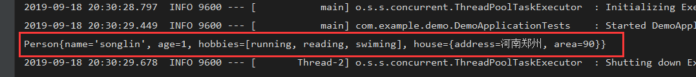
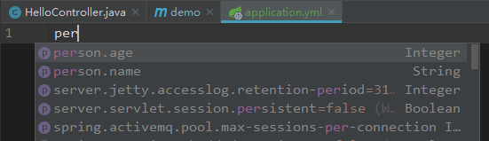
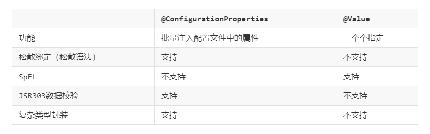
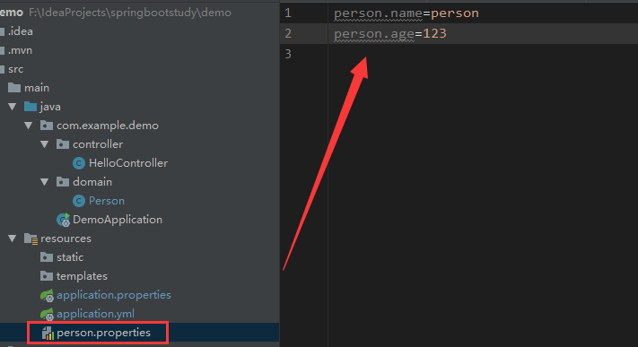
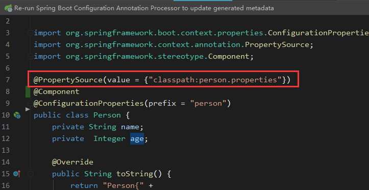
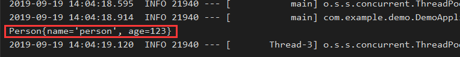
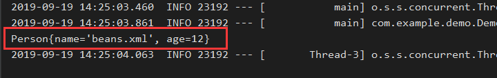

一、SpringBoot中的配置文件
说起到配置文件，大家并不陌生，早在springboot之前，我们用ssh，ssm框架开发的时候整天都要接触配置文件，那时候的配置文件基本上都是.properties和.xml后缀的文件，也基本就是这两种格式，配置好后我们可以从配置文件中读取数据注入到我们的程序中，现在springboot也支持.properties文件，xml用的不多了，新增了一个yaml的配置文件，这是一种新型的配置文件，我们在以后的配置文件中也是尽可能的都会用这种类型的配置文件。
二、YAML配置文件简介
2.1 什么是YAML
YAML是"YAML Ain't a Markup Language"（YAML不是一种标记语言）的递归缩写。在开发的这种语言时，YAML 的意思其实是："Yet Another Markup Language"（仍是一种标记语言），但为了强调这种语言以数据做为中心，而不是以标记语言为重点，而用反向缩略语重命名。它的结构像标记语言，但是语法书写形式方面和标记语言差很多，另外它的语法让它写起来更加的精简却能表达更多的数据内容。
2.2 YAML和Properites比较
相比于传统的properties配置文件来说，YAML的语法就比较严格，语法格式也比较多，接下来我们比较一下两种配置文件对同一种配置的书写方式。
Properties配置文件：
environments.dev.url=http://dev.bar.com
environments.dev.name=Developer Setup
environments.prod.url=http://foo.bar.com
environments.prod.name=My Cool App
my.servers[0]=dev.bar.com
my.servers[1]=foo.bar.comYAML配置文件：
environments:
dev:
url: http://dev.bar.com
name: Developer Setup
prod:
url: http://foo.bar.com
name: My Cool App
my:
servers:
- dev.bar.com
- foo.bar.com可以看出，YAML配置文件结构更加的清晰（通过空格缩进来表示层级），所书写的数据量也很小，有层次结构更加利于机器的解析。
三、YAML语法
3.1 数据格式
首先YAML中允许表示三种结构的数据，分别是常量（字面量）、对象、数组。例如下边的数据配置：
#即表示url属性值；
url: http://www.wolfcode.cn
#即表示server.host属性的值；
server:
host: http://www.wolfcode.cn
#数组，即表示server为[a,b,c]
server:
- 120.168.117.21
- 120.168.117.22
- 120.168.117.23
#常量
pi: 3.14 #定义一个数值3.14
hasChild: true #定义一个boolean值
name: '你好YAML' #定义一个字符串3.2 注释
YAML中注释用#开头，和Properties一样，YAML只有行注释。
3.3 格式要求
1.YAML中大小写敏感。
2.使用空格缩进表示层级关系，统一缩进层次的属于同一个层级。
3.缩进只能用空格，不能用tab，空格数量不做限制，只要求同一层级的保持同样的空格数量（吐槽一下，设计YAML的人估计有这个癖好）。
3.4 对象格式
当我们要标记一个对象的时候，使用key: value的形式，这里注意冒号后边必须有一个空格（再吐槽一下：不明白是为什么）：
key: value对象中包含多个值：
obj1:
key1: value1
key2: value2行内写法，YAML语序把对象写到一行，用{ }的形式，这和json差不多：
key: {key1: value1, key2: value2}复杂的对象格式，可能一个对象的key是多个值，比如是一个数组，这里我们使用一个问号+一个空格代表一个复杂的key值，一个冒号+一个空格代表一个value：
?
- complexkey1
- complexkey2
:
- complexvalue1
- complexvalue2这里的意思是，对象的key是一个数组[complexkey1,complexkey2]，值也是[complexvalue1,complexvalue2]。
3.5 数组格式
在YAML中，使用一个 - 和一个空格代表一个数组元素，其他的和对象的格式一样，数组元素也可以是对象，可以无限的嵌套：
hobby:
- running
- reading数组中也可以包含一些对象结构：
products:
-
id: 1
name: iphone
price: 5000
-
id: 2
name: xiaomi
price: 3000数组也可以写成行内样式：
products: [{id: 1,name: iphone,price: 5000},{id: 2,name: xiaomi,price: 3000}]YAML中提供了多种常量结构，包括：整数，浮点数，字符串，NULL，日期，布尔，时间等，可以看一下下面的例子：
boolean:
- TRUE #true,True都可以
- FALSE #false，False都可以
float:
- 3.14
- 6.8523015e+5 #可以使用科学计数法
int:
- 123
- 0b1010_0111_0100_1010_1110 #二进制表示
null:
nodeName: 'node'
parent: ~ #使用~表示null
string:
- 哈哈
- 'Hello world' #可以使用双引号或者单引号包裹特殊字符
- newline
newline2 #字符串可以拆成多行，每一行会被转化成一个空格
date:
- 2018-02-17 #日期必须使用ISO 8601格式，即yyyy-MM-dd
datetime:
- 2018-02-17T15:02:31+08:00 #时间使用ISO 8601格式，时间和日期之间使用T连接，最后使用+代表时区YAML中提供了很多特殊符号，可以表示不同的含义
1. --- YAML可以在同一个文件中，使用---表示一个文档的开始；比如Springboot中profile的定义：
server:
address: 192.168.1.100
---
spring:
profiles: development
server:
address: 127.0.0.1
---
spring:
profiles: production
server:
address: 192.168.1.120一般情况下同一层级的key是不允许重复的，这里spring显然是重复的，但是用---隔开了，相当于是两个配置文件了，只不过写到了一个里边。
2. ... 和---配合使用，在一个配置文件中代表一个文件的结束，和上边的作用差不多：
---
time: 20:03:20
player: Sammy Sosa
action: strike (miss)
...
---
time: 20:03:47
player: Sammy Sosa
action: grand slam
...3. !! YAML中使用!!做类型强行转换：
string:
- !!str 54321
- !!str true这里相当于把数字54321和true强制转换成str类型，也就是字符串类型。
--- !!set
- Mark McGwire: 65
- Sammy Sosa: 63
- Sammy Sosa: 63
- Ken Griffy: 58将数组解析为set，简单理解，转化的内容就是：[{Ken Griffy=58}, {Mark McGwire=65}, {Sammy Sosa=63}]，重复的Sammy Sosa去掉。
4. >可以使字符串换行，| 保留换行符，有时候我们的文本需要换行或者特殊符号要保留出来，不起作用，那就需要用到这个符号：
accomplishment: >
Mark set a major league
home run record in 1998.
stats: |
65 Home Runs
0.278 Batting Average读取结果：
stats=65 Home Runs
0.278 Batting Average,
accomplishment=Mark set a major league home run record in 1998.可以看出来stats保留了换行，而accomplishment可以让我们在YAML中以换行的方式写配置，但是实际读取出来还是一行字符串。那么 | 就是所见即所得的配置，适于有格式的配置项，注意 | 需要有空格。
我们通常用到的基本的语法就这么多，完全满足我们平常的配置使用了，更加高级的用法可以参考官方文档。
我们先添加一个YAML配置文件，是一个person的配置，我们准备把这些数据注入到我们的java实体中去：
person:
name: songlin
age: 1
hobbies:
- running
- reading
- swiming
house:
address: 河南郑州
area: 90添加一个person类：
@ConfigurationProperties：使用配置文件中的数据绑定当前到当前类，prefix可以用来指定配置文件中以哪个key值开头的下边的所有属性绑定到此类。
@Component：要绑定的类必须是spring中的组件，因为这是spring容器帮我们自动注入的，所以也得交给spring容器管理。
package com.example.demo.domain;
import org.springframework.boot.context.properties.ConfigurationProperties;
import org.springframework.stereotype.Component;
import java.util.List;
import java.util.Map;
@ConfigurationProperties(prefix = "person")
@Component
public class Person {
private String name;
private Integer age;
private List<String> hobbies;
private Map<String,String> house;
@Override
public String toString() {
return "Person{" +
"name='" + name + '\'' +
", age=" + age +
", hobbies=" + hobbies +
", house=" + house +
'}';
}
public String getName() {
return name;
}
public void setName(String name) {
this.name = name;
}
public Integer getAge() {
return age;
}
public void setAge(Integer age) {
this.age = age;
}
public List<String> getHobbies() {
return hobbies;
}
public void setHobbies(List<String> hobbies) {
this.hobbies = hobbies;
}
public Map<String, String> getHouse() {
return house;
}
public void setHouse(Map<String, String> house) {
this.house = house;
}
}然后在test中运行单元测试：
package com.example.demo;
import com.example.demo.domain.Person;
import org.junit.Test;
import org.junit.runner.RunWith;
import org.springframework.beans.factory.annotation.Autowired;
import org.springframework.boot.test.context.SpringBootTest;
import org.springframework.test.context.junit4.SpringRunner;
@RunWith(SpringRunner.class)
@SpringBootTest
public class DemoApplicationTests {
@Autowired
private Person person;
@Test
public void contextLoads() {
System.out.println(person);
}
}直接运行会发现控制台输入person实例中的数据，说明我们的注入成功。

配置中自动提示：我们可以加入以下依赖，当我们在配置文件中写配置的时候，springboot会根据我们项目中存在的实体，提示我们相应的配置名称。
<!--导入配置文件处理器，配置文件进行绑定就会有提示-->
<dependency>
<groupId>org.springframework.boot</groupId>
<artifactId>spring-boot-configuration-processor</artifactId>
<optional>true</optional>
</dependency>
@Value和@ConfigurationProperties注入方式对比：

上述注入方式不区分是哪个配置文件的配置，YAML和Properties类型的配置文件都可以注入，springboot会自动查询。
1.当我们的业务中需要获取配置文件中的某一个值时，我们可以用@Value的方式获取。
2.当我们的业务中需要获取配置文件中的一组值或者复杂的值时，我们可以用@ConfigurationProperties来获取
我们可以是用

在Person.java中使用该配置，在单元测试中输出person，可以看见读取了person.properties中的配置数据：


注意：这里如果application.properties中或者application.yml中存在相同的配置，此时person.properties就会被前边两个配置文件中的配置覆盖掉，并且默认情况下application.properties比application.yml的优先级更高。
@ImportResource：导入外部的spring配置文件，因为springboot倡导的就是零配置，因此不会识别项目里的spring的配置文件，如果我们指定spring配置文件（一些beans的实例），一些对象可以由此注入，spring的配置文件和上边的配置文件是不一样的。
接下来我们来指定beans.xml来作为spring的配置文件，并把注解标在启动类上：
<?xml version="1.0" encoding="UTF-8"?>
<beans xmlns="http://www.springframework.org/schema/beans"
xmlns:xsi="http://www.w3.org/2001/XMLSchema-instance"
xsi:schemaLocation="http://www.springframework.org/schema/beans http://www.springframework.org/schema/beans/spring-beans.xsd">
<bean id="personService" class="com.example.demo.service.PersonService"></bean>
</beans>在启动类上添加注解：@ImportResource(locations = {"classpath:beans.xml"})
@ImportResource(locations = {"classpath:beans.xml"})
@SpringBootApplication
public class DemoApplication {
public static void main(String[] args) {
SpringApplication.run(DemoApplication.class, args);
}
} 添加PersonService类：
package com.example.demo.service;
import com.example.demo.domain.Person;
public class PersonService {
public Person getPerson(){
Person p = new Person();
p.setAge(12);
p.setName("beans.xml");
return p;
}
} 在单元测试中添加测试代码：
@RunWith(SpringRunner.class)
@SpringBootTest
public class DemoApplicationTests {
@Autowired
private PersonService personService;
@Test
public void contextLoads() {
System.out.println(personService.getPerson());
}
} 运行输出结果：

前边我们是通过指定beans.xml配置文件，设置了spring的容器，接下来完全用代码加注解的方式来实现提供一个spring容器，这也是springboot官方推荐的一种方式
1.使用@Configuration注解说明此类是一个spring配置文件。
2.使用@Bean注解表名返回的内容是spring容器中的一个bean。
/**
* @Configuration：指明当前类是一个配置类；就是来替代之前的Spring配置文件
*
* @Bean 相当于在配置文件中用<bean><bean/>标签添加组件
*
*/
@Configuration
public class MyAppConfig {
//将方法的返回值添加到容器中；容器中这个组件默认的id就是方法名
@Bean
public PersonService personService1(){
System.out.println("配置类@Bean给容器中添加组件了...");
return new PersonService();
}
}这个模式可以让我们的项目根据不同的环境提供不同的配置，灵活的分开了线上环境和测试环境的配置。
在实际开发的时候，我们往往分为本地环境、测试环境、生产环境，如果我们的项目只用一个配置文件，这样的话就得根据发布环境一直修改这个配置文件，不仅麻烦还容易出错，引起生产事故。这个时候我们就可以添加多个环境的配置文件，格式一般为：application-{env}.properties/yml，默认使用applicaiton.properties/yml主配置文件，通过在里边配置激活不同的环境，来实现不同的环境使用不同的配置文件。
我们可以创建以下几个配置文件：
application.properties：主配置文件
application-dev.properties：开发环境配置文件
application-test.properties：测试环境配置文件
application-prod.properties：生产环境配置文件
加入我们分别在各个环境中添加配置：
# 开发环境 application-dev.properties
server.port=8082
# 测试环境 application-test.properties
server.port=8083
# 生产环境 application.prod-properties
server.port=8084然后在主配置文件中写入：
# 切换到开发环境 application.properties
spring.profiles.active=dev也可以在一个yml中配置成多个文档块，来区分各个环境：
spring:
profiles:
active: test # 切换配置
---
# 开发环境
server:
port: 8082
spring:
profiles: dev
---
# 测试环境
server:
port: 8083
spring:
profiles: test
---
# 生产环境
server:
port: 8084
spring:
profiles: prod也可以在启动时，使用命令行指定环境，会覆盖掉当前主配置文件中的环境激活配置：
java -jar com.example.demo.0.0.1-SNAPSHOT.jar --spring.profiles.active=dev；
1.–file:./config/
2.–file:./
3.–classpath:/config/
4.–classpath:/
优先级由高到底，高优先级的配置会覆盖低优先级的配置，springboot会从这四个位置全部加载主配置文件。
我们还可以通过spring.config.location来改变默认的配置文件位置
项目打包好以后，我们可以使用命令行参数的形式，启动项目的时候来指定配置文件的新位置，指定配置文件和默认加载的这些配置文件共同起作用形成互补配置，并不是只加载优先级最高的。
java -jar com.example.demo.0.0.1-SNAPSHOT.jar--spring.config.location=D:/application.properties。
本篇讲了YAML配置文件的使用，在springboot中也推荐使用这种方式来做配置文件，当然springboot中也支持properties作为配置文件，使用方法也都是一样的。